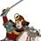
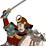

Requires
- Buildings:

- Arts:

- Resources:

Enables
- Buildings:

- Units:

 



Basic Building Statistics (can be modified by difficulty level, arts, skills, traits and retainers)
- Cost: 2800
- -1 to samurai cavalry recruitment times in this province
Description
A wise man listens to his horse.
Cavalry units trained in this dojo will always be better and cheaper than units trained elsewhere. Bajutsu, or the skill of horse riding, is as much about training the man as the horse. A master is not just a horseman, he is also a warrior, scholar and teacher. He can read a battle, understand a horse and teach even the most unpromising student. There were many schools of horsemanship in medieval Japan. Each had its own style and specialities, but all agreed that it was the bond between rider and horse that made a cavalry warrior. Students were expected to know everything about their mounts. They were also expected to stay in the saddle no matter what happened, be able to guide the animal with their knees, and fight with spear, bow and sword. Most schools favoured tractable animals for easy training, but on the Kanto plain high-spirited horses were preferred. These mounts took more breaking in, but were thought to make better battle steeds.